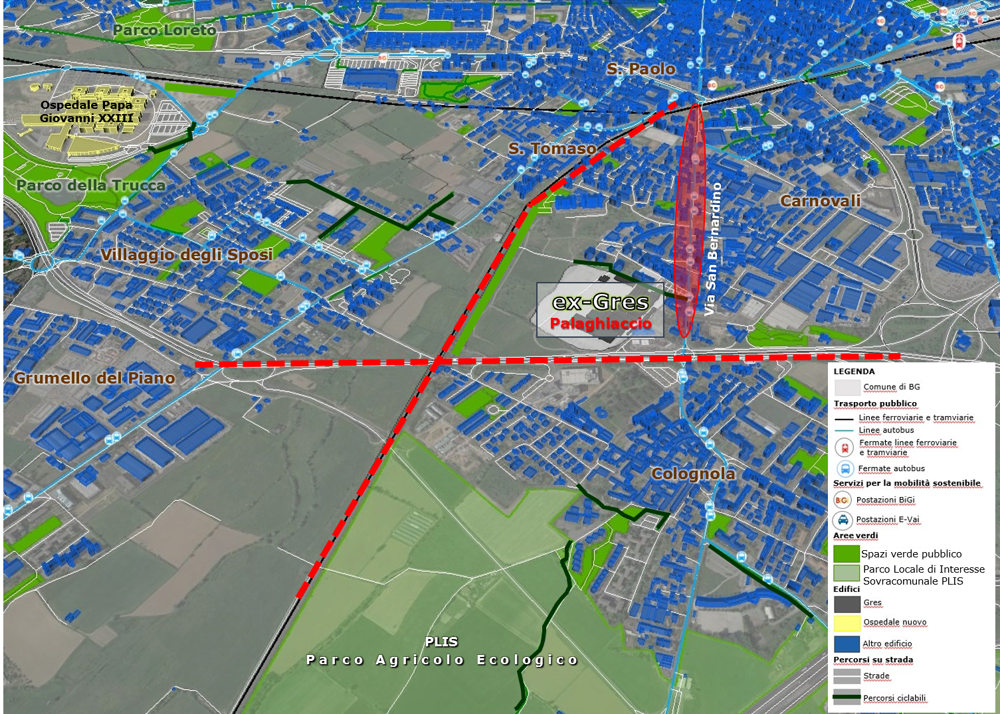

| Criticità delle infrastrutture della mobilità |
|  Le principali criticità della mobilità dell'area dell'ex-Gres sono dovute alla presenza della ferrovia e della circonvallazione che rendono la zona isolata e difficilmente accessibile |
| Attualmente
l’area ex-Gres è chiusa ad ovest dalla ferrovia e a sud dalla
circonvallazione
che la isolano sia rispetto alla parte occidentale della città che alla
parte meridionale, ossia Colognola. Inoltre, per quanto riguarda la
possibilità di realizzazione
di una mobilità green, via San Bernardino risulta inadeguata per la creazione
di una pista ciclabile, poiché la sua conformazione non consente la
predisposizione di un percorso protetto per i ciclisti di dimensione adeguata.
Per di più va tenuto conto che la via è particolarmente trafficata, essendo una
delle principali direttrici della città e presenta spazi di sosta lungo il suo
tragitto. Anche le strade che portano verso il centro, passando all’interno del
quartiere San Tomaso, non si prestano a diventare percorsi ciclabili perché appaiono
piuttosto strette e tortuose, in quanto realizzate più per collegare gli
edifici del quartiere che per una connessione con il resto della città. |